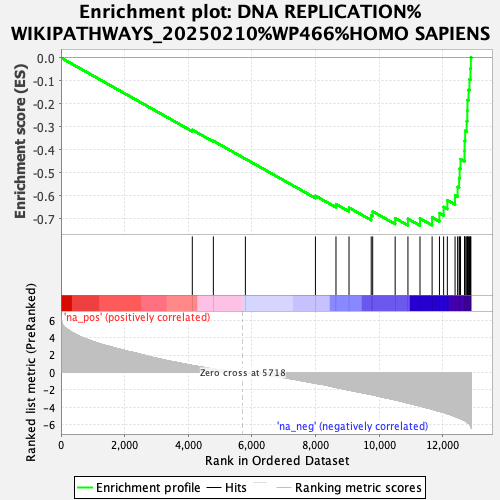
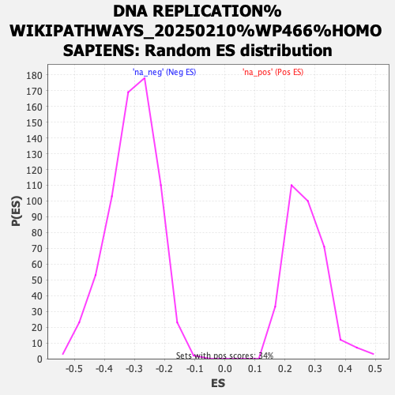

| | | Dataset | ranked_genes_2 |
| Phenotype | NoPhenotypeAvailable |
| Upregulated in class | na_neg |
| GeneSet | DNA REPLICATION%WIKIPATHWAYS_20250210%WP466%HOMO SAPIENS |
| Enrichment Score (ES) | -0.7307457 |
| Normalized Enrichment Score (NES) | -2.389515 |
| Nominal p-value | 0.0 |
| FDR q-value | 0.0 |
| FWER p-Value | 0.0 |
Table: GSEA Results Summary

Fig 1: Enrichment plot: DNA REPLICATION%WIKIPATHWAYS_20250210%WP466%HOMO SAPIENS
Profile of the Running ES Score & Positions of GeneSet Members on the Rank Ordered List
| SYMBOL | RANK IN GENE LIST | RANK METRIC SCORE | RUNNING ES | CORE ENRICHMENT | | 1 | ORC3 | 4129 | 0.797 | -0.3141 | No |
| 2 | POLD4 | 4791 | 0.392 | -0.3623 | No |
| 3 | ORC6 | 5798 | -0.021 | -0.4402 | No |
| 4 | DBF4 | 8001 | -1.228 | -0.6012 | No |
| 5 | PRIM2 | 8647 | -1.705 | -0.6374 | No |
| 6 | RFC3 | 9057 | -2.007 | -0.6529 | No |
| 7 | GMNN | 9755 | -2.520 | -0.6865 | No |
| 8 | RPA3 | 9801 | -2.549 | -0.6693 | No |
| 9 | UBC | 10508 | -3.133 | -0.6987 | No |
| 10 | POLD3 | 10910 | -3.501 | -0.7014 | Yes |
| 11 | CDT1 | 11289 | -3.831 | -0.6996 | Yes |
| 12 | CDK2 | 11670 | -4.209 | -0.6949 | Yes |
| 13 | RPA1 | 11901 | -4.453 | -0.6766 | Yes |
| 14 | ORC2 | 12032 | -4.565 | -0.6496 | Yes |
| 15 | MCM10 | 12149 | -4.722 | -0.6203 | Yes |
| 16 | PRIM1 | 12392 | -5.043 | -0.5981 | Yes |
| 17 | POLE2 | 12472 | -5.154 | -0.5624 | Yes |
| 18 | POLD2 | 12519 | -5.213 | -0.5236 | Yes |
| 19 | POLE | 12537 | -5.235 | -0.4824 | Yes |
| 20 | POLA2 | 12564 | -5.285 | -0.4415 | Yes |
| 21 | MCM2 | 12689 | -5.494 | -0.4065 | Yes |
| 22 | MCM5 | 12692 | -5.494 | -0.3620 | Yes |
| 23 | MCM6 | 12710 | -5.526 | -0.3185 | Yes |
| 24 | MCM7 | 12758 | -5.690 | -0.2759 | Yes |
| 25 | RFC2 | 12777 | -5.753 | -0.2306 | Yes |
| 26 | RFC4 | 12782 | -5.753 | -0.1841 | Yes |
| 27 | PCNA | 12816 | -5.828 | -0.1394 | Yes |
| 28 | POLA1 | 12845 | -5.875 | -0.0938 | Yes |
| 29 | CDC6 | 12877 | -6.048 | -0.0471 | Yes |
| 30 | RFC1 | 12889 | -6.084 | 0.0015 | Yes |
Table: GSEA details [plain text format]

Fig 2: DNA REPLICATION%WIKIPATHWAYS_20250210%WP466%HOMO SAPIENS: Random ES distribution
Gene set null distribution of ES for DNA REPLICATION%WIKIPATHWAYS_20250210%WP466%HOMO SAPIENS